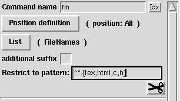
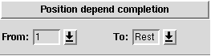
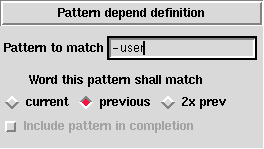
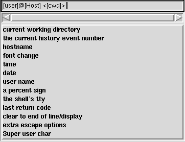

<!DOCTYPE HTML PUBLIC "-//W3C//DTD HTML 3.2//EN">
<HTML>
<HEAD>
<title>Main features of TCSH Issue 12</title>
</HEAD>
<BODY >

<H4>
&quot;Linux Gazette...<I>making Linux just a little more fun!</I>
&quot;</H4>

<P> <HR> <P> 
<!--===================================================================-->

<center>
<H2>Features of the TCSH Shell</H2>
<H4>By Jesper Kj&aelig;r Pedersen, 
<a href="mailto:blackie@imada.ou.dk">blackie@imada.ou.dk</a></H4>
</center>
<P> <HR> <P>  

<BLOCKQUOTE>
<CENTER><H2>Abstract</H2></CENTER>

<P>
In this article, I will describe some of the main features of TCSH, which I
believe makes it worth using as the primary login shell. This article is
not meant to persuade bash users to change! I've never used bash, and by
that reason I know very little about it.<p>

As some of you surely know, I've created a configuration tool called <a
href="http://www.imada.ou.dk/~blackie/dotfile/">The Dotfile Generator</a>,
which can configure TCSH. I believe that this tool is very handy when one
wants to get the most out of TCSH (without reading the manual page a couple of
times.) Because of that I'll refer to this tool several times throughout
this article to show how it can be used to set up TCSH.
</BLOCKQUOTE>
<HR>


<center><h2>Why is the shell so important?</h2></center>
The shell is your interface to executing program, managing files and
directories etc. Though very few people are aware of it, one uses the shell
very much in the daily work. E.g. completing file names, using history
substitution and aliases. The TCSH shell offers all of
these features and a few more, which the average user very seldom takes
advantages of.<p>

With a high knowledge of your shell's power, you may decrease the time you
need to spend in the shell, and increase the time spent on the original tasks


<hr><center><h2><a name="tcsh-completion">Command line completions</a></h2></center>
An important feature that is used by almost all users of a shell is the
<i>command line completion</i>. With this feature you don't need to type
all the letters of a filename, but only the ambiguous ones. This means that
if you wish to edit a file called <tt>file.txt</tt>, you may only need to
type <tt>fi</tt> and hit the TAB key, then the shell will type the rest of
the filename for you.<p>


Basically one can complete on files and directories. This means that you
can not complete on host names, process id's, options for a given program
etc.  Another thing you can not do with this type of completion is to
complete on directory names only, when typing the argument for the command
<tt>cd</tt><p>

In TCSH, the completion mechanism is enhanced so that it is possible to
tell TCSH which list to complete from for each command. This means that
you can tell TCSH to complete from a list of host names when completing
on the commands <tt>rlogin</tt> and <tt>ping</tt>. An alternative is to tell
it to complete only on directories when the command is <tt>cd</tt>.<p>


To configure user defined completion with The Dotfile Generator (from now
on called TDG) go to the page <tt>completion</tt> -> <tt>userdefined</tt>,
this will bring up a page which looks like this:<p>

<center> </center><p>

As the command name, you tell TDG which command you wish to define a
completion for. In this example it is <tt>rm</tt>.

Next you have to tell TDG which arguments to the command, this completion
should apply to.  To do this, press the button labeled <tt>Position
definition</tt>. This will bring up a page, which is split in two parts:<p>


<table cols=2 width=100%>
<tr>
<td valign=top>
<td valign=top>
In the first part, you tell TDG, that the position definition, should be
defined from the index of the argument, which is trying to be completed
(the one, where the tab key is pressed.) Here you can tell it that you
wish to complete on the first argument, all the arguments except the first
one etc.<p>
<tr><td valign=top> 
<td valign=top>
The alternative to <i>position dependent completion</i> is <i>pattern dependent
completion</i>. This means that you can tell TDG, that this completion
should only apply if the current word, the previous word or the word before
the previous word conform with a given pattern.
</table>

Now you have to tell the TDG which list to complete from. To do this press
the button labeled <tt>List</tt>. This will bring up a page, where you can
select from a lot of different lists. E.g. aliases, user names, or
directories.

<h3>Files and Directories</h3>
Four of the lists you can select from are <tt>Commands, Directories, File
names</tt> and <tt>Text files</tt>. If you give the optional directory to any
of these, only elements from this directory is used.

<h3>Predefined Lists</h3> There are two ways to let completion be from a
predefined list. One is to mark the option <tt>predefined list</tt>, and
type all the options in this list.<p>

This solution is a  bad idea if the list is used several places (e.g. a list
of host names) in that case, one should select the list to be located in a
variable, and then set this variable in the <tt>.tcshrc</tt> file.

<h3>Output from command</h3>
In many cases the list should be <i>calculated</i> when the completion
takes place. This could e.g. be a list of users located at a given host, or
targets in a makefile.<p>

To set up such a completion, first develop the command, which return the
list to complete from. The command must return the completion list on
standard output as a space separated list. When this is done, insert this
command in the entry saying <tt>Output From Command</tt>.<p>

Here's a little Perl command, which find the targets in a makefile:<br>
<pre>perl -ne 'if (/^([^.#][^:]+):/) {print "$1 "}' Makefile</pre>

If this is inserted in the Entry, one can complete on targets from the file
called Makefile, in the current working directory.<p>

If someone should think that its only to promote TDG, that I describe TCSH
through it, (s)he should take a look at the following line, which is the 
generated code for the <i>make</i> completion:
<pre>
complete make  'p@*@`perl -ne '"'"'if (/^([^.#][^:]+):/) {print "$1"}'"'"'Makefile`@'
</pre>


<h3>Restrict to pattern</h3>
With user defined completion, you can restrict the files, which are
matched, for each command. Here are some very useful examples:
<dl>
  <dt> Restrict latex to *.{tex,dtx,ins}
  <dd> The latex command will only complete on files ending in
       <tt>.tex</tt>, <tt>.dtx</tt> or <tt>.ins</tt>
  <dt> Restrict rm to ^*.{tex,html,c,h}<br>
  <dd> This means that you can not complete rm to a <tt>.tex</tt>,
       <tt>.html</tt>, <tt>.c</tt> or <tt>.h</tt> file!<br>
       I've done that a few times, when I e.g. wanted to delete a file
       called important.c~. Since the file important.c existed tcsh only
       completed to that name, and.. I deleted the wrong file, because I
       was to quick :-(
       
</dl>

<h3>Additional examples</h3> Additional examples can be obtained from TDG,
if you load the export file distributed with TDG. Please note that if you
wish to keep the other pages, you have to tell TDG only to import the page
<tt>completion/userdefined</tt>. This is done on the <tt>Details</tt> page,
which is accessible from the reload page.


<hr><center><h2>Configuring the prompt</h2></center>
Configuring the prompt is very easy with TDG. Just enter the menu called
<tt>prompt</tt>. On this page you can configure three prompts:
<dl>
  <dt> prompt
  <dd> This is the usual prompt, which you see on the command line,
       where you are about to enter a command.
  <dt> prompt2
  <dd> This prompt is used in <tt>foreach</tt>, and <tt>while</tt> loops,
       and at lines continuing lines ended with a slash.
  <dt> prompt3
  <dd> This prompt is used when TCSH tries to help you, when it meet
       commands it doesn't know (called spell checking.)
</dl>

The prompts are mixed with tokens and ordinary text. The tokens are
inserted by clicking on them in the menu below the scrollbar, and the
ordinary text is simply typed in. When a token is inserted an indication will
be shown in the entry. Here's an example of how this may look:<p>

<center></center><p>


<table cols=2 width=100%>
<tr>
<td valign=top>
<td valign=top>As has been <a
href="../issue01to08/lg_issue6.html#xterm_title">discussed</a> in issue6 of the Gazette,
some of the prompt may be located in the xterm title bar instead of on the
command line. To do this, choose <tt>font change</tt> and select
<tt>Xterm</tt>.
<tr></table>


<hr><center><h2>History</h2></center>
The history mechanism of the shell is a valuable thing, which makes it
easier to type similar commands after each other.<p>

To see a list of the previously executed commands, type <tt>history</tt>.<p>

The following table lists the <i>event specifiers</i>:<p>

<table border=all  CELLSPACING=1 CELLPADDING=4 cols=2><tr>
<td>!n<td>This refers to the history event, with index <tt>n</tt><tr>
<td>!-n<td>This refers to the history event, which was executed, <tt>n</tt>
times ago: <tt>!-1</tt> for the previous command, <tt>!-2</tt> for the one
before the previous command etc.<tr>
<td>!!<td>This refers to the previous command<tr>
<td>!#<td>This refers to the current command<tr>
<td>!s<td>This refers to the most recent command, whose first word begins
with the string <tt>s</tt><tr>
<td>!?s?<td>This refers to the most recent command, which contain the sting
<tt>s</tt><tr>
</table><p>


With these commands, you can re-execute a command.
E.g. just type <tt>!!</tt>, to re-execute the previous command.
This is however often not what you want to do. What you really wants is to
re-execute some part of a previous command, with some new elements added. To
do this, you can use one of the following <i>word designators</i>, which is
appended to the event specifier, with a colon.<p>


<table border=all  CELLSPACING=1 CELLPADDING=4 cols=2><tr>
<td>0<td>The first word (i.e. the command name)<tr>
<td>n<td>The <tt>n</tt>th word<tr>
<td>$<td>The last argument<tr>
<td>%<td>The word matched by an <tt>?s?</tt> search<tr>
<td>x-y<td>Argument range from x to y<tr>
<td>*<td>All the arguments to the command (equal to ^-$)<tr>
</table><p>

Now it's possible to get the last argument from the previous command, by
typing <tt>!!:$</tt>. You'll however often see that you very often refer to
the previous command, so if no event specifier is given, the previous
command is used. This means that instead of writing <tt>!!:$</tt>, you
may only write <tt>!$</tt>.<p>

More words designators exists, and it's even possible to edit the words with
different commands. For more information about this and for more examples,
please take a look into the <a
href="http://www.imada.ou.dk/Technical/Manpages/tcsh/History_substitution.html">tcsh manual</a><p>


<table cols=2 width=100%>
<tr>
<td valign=top>
<td valign=top>It is possible to expand the history
references on the command line before you evaluate them by pressing
<tt>ESC-SPC</tt> or <tt>ESC-!</tt> (This is: first the escape key, and
next the space key or the <tt>!</tt> key). On some keyboards you may use the
meta key instead of the escape key. I.e.<tt> M-SPC</tt> (One keystroke!)
<tr></table><p>


<hr><center><h2>Patterns</h2></center>
Many operations in the shell often works on many files, e.g. all files
ending with <tt>.tex</tt> or starting with <tt>test-</tt>. Tcsh has the
opportunity to <i>type</i> all these files for you, with file patterns. The
following list shows which possibilities there exists:<p>

<table border=all  CELLSPACING=1 CELLPADDING=4 cols=2><tr>
<td valign=top>*<td valign=top>Match any number of characters<tr>
<td valign=top>?<td valign=top>Match a single character<tr>
<td valign=top>[...]<td valign=top>Match any single character in the list<tr>
<td valign=top>[x-y]<td valign=top>Match any character within the range of
characters from x to y<tr>
<td valign=top>[^...]<td valign=top>Match elements, which does not match
the list<tr>
<td valign=top>{...}<td valign=top>This expands to all the words
listed. There's no need that they match.<tr>
<td valign=top>^...<td valign=top><tt>^ </tt> in the beginning of a pattern
negates the pattern.<tr>
</table><p>

<h3>Examples</h3>
<dl>
  <dt> match all files ending with .tex
  <dd> *.tex
  <dt> match all files which does not end with .tex
  <dd> ^*.tex
  <dt> match xxxabyy xxxcdeyy and xxxhifjyy
  <dd> xxx{ab,cde,hifj}yy
  <dt> match all .c and .h files
  <dd> *.[ch] or *.{c,h}
</dl>

<h3>The shell expand patterns</h3>
An important thing to be aware of is that it is the shell, which expand the
patterns, and <b>not</b> the programs, which is executed with the pattern.<p>

An example of this is the program <tt>mcopy</tt> which copy files from
disk. To copy all files, you may wish to use a star as in: <tt>mcopy a:*
/tmp</tt>. This does however not work since the shell will try to
expand the star, and since it can not find any files, which starts with
<tt>a:</tt>, it will signal an error. So if you wish to send a star to the
program, you have to escape the star: <tt>mcopy a:\* .</tt><p>


<table cols=2 width=100%>
<tr>

There exists two very useful key bindings, which can be
used with patterns: The first is <tt>C-xg</tt>, which list all the files
matching the pattern, without executing the command. The other is
<tt>C-x*</tt>, which expand the star on the command line. This is
especially useful if you e.g. wishes to delete all files ending in .c except
<tt>important.c</tt>, <tt>stable.c</tt> and <tt>another.c</tt>. To create a
pattern for this, might be very hard, so just use the pattern
<tt>*.c</tt>. Then type <tt>C-x*</tt>, which will expand <tt>*.c</tt> to
all you .c files. Now it's easy to remove the three files from the list


<hr><center><h2>Aliases</h2></center>
When using the shell one will soon recognize that certain commands are
typed again and again. The one at top ten is surly <tt>ls -la</tt>, which
list all files in a directory in long form.<p>

TCSH has a mechanism to create aliases for commands. This means that you can
create an alias for <tt>ls -la</tt> just called <tt>la</tt>.<p>

Aliases may refer to the arguments of the command line. This means that you
can create a command called pack, which take a directory name and pack the
directory with tar and gz. etc.

Aliases can often be a bit hard to create since one often wants
history/variable references expanded at time of use, and not at the
definition time. This has been done easier with TDG, so go to the page
<tt>aliases</tt>, to define aliases. If you end up with an alias you can
not define on this page, but in tcsh, please <a
href="mailto:blackie@imada.ou.dk">send me an email.</a> For more information about
aliases, see the <a href="http://www.imada.ou.dk/Technical/Manpages/tcsh/Alias_substitution.html">tcsh manual</a>


<hr><center><h2>Timing programs</h2></center>
Have you ever needed to know how long a program took to run, how much CPU
it used etc?. If so, you may recognize the output from the tcsh built-in time command:
<pre>
0.020u 0.040s 0:00.11 54.5%     0+0k 0+0io 21pf+0w
</pre>
Informative? Yes but... The gnu time command is a bit more understandable:
<pre>
0.01user 0.08system 0:00.32elapsed 28%CPU (0avgtext+0avgdata 0maxresident)k
0inputs+0outputs (0major+0minor)pagefaults 0swaps
</pre>
But still...<p>

In TDG you can configure the output from the time command on the page
called jobs. It looks like this:<p>

<center></center><p>

As for the prompt, here's an entry once again for mixed tokens and and
ordinary text. Remember, if there is something in TDG that you do not
understand, help is available by pressing the right mouse button over the
given widget.


<hr><center><h2>References</h2></center>
As you may have guessed, TDG and this article will help you a lot of the
way to use TCSH, BUT you may need to read a bit more to get more out
of TCSH, here's a few references:

<ul>
  <li> The <a href="http://www.imada.ou.dk/Technical/Manpages/tcsh/top.html">Tcsh manual page</a>
  <li> The <a href="http://www.primate.wisc.edu/software/csh-tcsh-book/">O'Reilly book</a> on tcsh
  <li> The <a href="mailto:tcsh@mx.gw.com">Tcsh mailing list</a> (send
mail to <a href="mailto:listserv@mx.gw.com">listserv@mx.gw.com</a> with body text <tt>SUBscribe TCSH <i>your name</i></tt>)
</ul>
<hr>
<a href="http://www.imada.ou.dk/~blackie/">Jesper Kj&aelig;r Pedersen</a> &lt;<a
href="mailto:blackie@imada.ou.dk">blackie@imada.ou.dk</a>&gt;

<!--===================================================================-->
<P> <hr> <P> 
<center><H5>Copyright &copy; 1996, Jesper Kj&aelig;r Pedersen <BR> 
Published in Issue 12 of the Linux Gazette</H5></center>

<!--===================================================================-->
<P> <hr> <P> 
<A HREF="./index.html"></A>
<A HREF="../index.html"></A>
<A HREF="./redhat.html"></A>
<A HREF="feddi.howto.html"></A>
<P> <hr> <P> 
</BODY>
</HTML>
